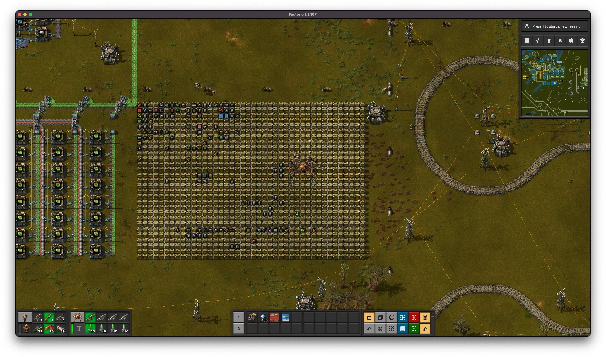

More Storage
It’s been a bit, but I’m playing again.
I Need More!!!
My storage array was tiny. A small 5x10 ish block. And I was pretty much out of storage. I needed more, but how much more?
I could go pretty big, it would take a lot of resources and time to build. Or, I could go scaleable, build what I need, with room to add more.
I went with massive, setting part of the bot mall to make storage chests, and pasting down something stupid.

My coworker says I have a problem. I don’t, but if this thing gets full… I will. Until I build a bigger one.